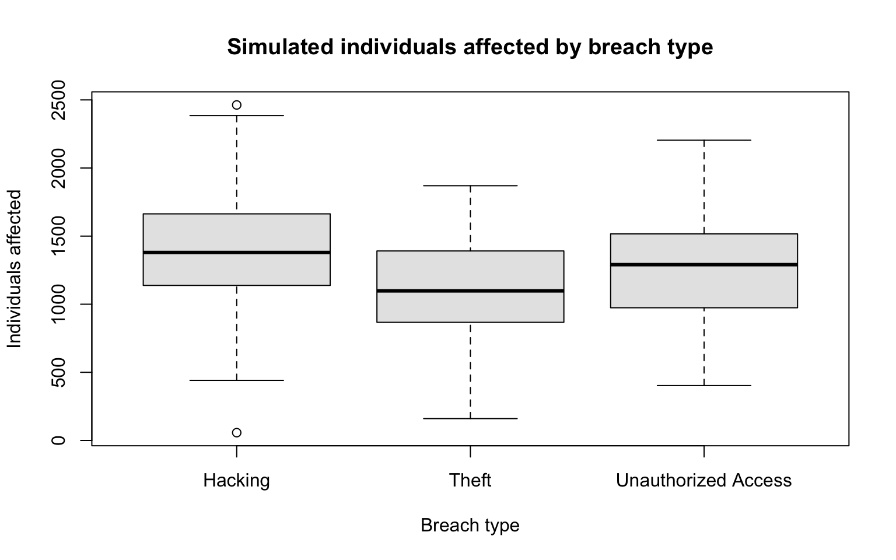

Homework 5: Solutions — Statistical Hypothesis Testing and Association
Instructor solution key — not for student distribution.
Overview
Total: 100 points
In this homework, you will use one dataset to investigate questions about cybersecurity incidents. You will practice hypothesis testing for means and proportions, one-way ANOVA, the chi-square test of independence, and Cramér’s V.
Important: This is a synthetic dataset created for teaching purposes. The 300 records do not represent actual cybersecurity incidents, organizations, or individuals. Any patterns or statistical associations found in this dataset are simulated and must not be interpreted as evidence about real-world cybersecurity trends.
Dataset description
Variable
Description
IncidentID
Unique incident identifier
Year
Year of the simulated incident (2008–2018)
BreachType
Theft, Hacking, or Unauthorized Access
IndividualsAffected
Simulated number of individuals affected
DataLocation
Laptop, Network, or Paper
Instructions
Use R to complete all questions. Include the relevant R code, output, and written interpretations.
Unless otherwise specified, use a significance level of \(\alpha = 0.05\).
For each hypothesis test, state the null and alternative hypotheses, identify the method, report the test statistic and p-value, make a decision, and interpret the result in context.
When a question asks about differences or associations, do not interpret statistical significance as proof of causation.
Submit your completed R Markdown file and the knitted HTML (or PDF, if requested by the instructor).
Load the data
Run the code below to load the dataset directly from GitHub. No local CSV download is needed. An internet connection is required when running or knitting the document.
(a) (4 pts) Report the number of observations and the number of variables. Check whether the dataset contains missing values.
Solution: There are 300 observations and 5 variables, with 0 missing values.
dim(cyberData)
[1] 300 5
colSums(is.na(cyberData))
IncidentID Year BreachType IndividualsAffected
0 0 0 0
DataLocation
0
sum(is.na(cyberData))
[1] 0
(b) (3 pts) Create a frequency table for BreachType and report the number of incidents in each category.
Solution: There are 91 Hacking, 101 Theft, and 108 Unauthorized Access incidents.
table(cyberData$BreachType)
Hacking Theft Unauthorized Access
91 101 108
(c) (3 pts) Summarize IndividualsAffected by BreachType. Report the sample size, mean, and standard deviation for each category. Briefly describe what you observe.
Solution: Summary statistics (sample standard deviations):
Breach type
n
Mean
SD
Hacking
91
1407.24
411.36
Theft
101
1102.16
384.51
Unauthorized Access
108
1265.67
362.51
aggregate(IndividualsAffected ~ BreachType, cyberData,function(x) c(n =length(x), mean =mean(x), sd =sd(x)))
Interpretation: In this simulated sample, Hacking has the highest mean number of affected individuals, Theft the lowest, and Unauthorized Access falls between them. The within-group variation is substantial.
Question 2. One-Sample t-Test (10 points)
A researcher wants to investigate whether the population mean number of individuals affected by Hacking incidents exceeds 1,200.
(a) (3 pts) State the null and alternative hypotheses using the population mean \(\mu_H\).
Solution: Let \(\mu_H\) denote the population mean number of individuals affected by Hacking incidents.
\(H_0: \mu_H \leq 1200\) versus \(H_a: \mu_H > 1200\). The test is calculated at the boundary \(\mu_H = 1200\).
(b) (4 pts) Use an appropriate one-sample t-test in R. Report the test statistic, degrees of freedom, and p-value.
t.test(hacking$IndividualsAffected,mu =1200, alternative ="greater")
One Sample t-test
data: hacking$IndividualsAffected
t = 4.8059, df = 90, p-value = 3.065e-06
alternative hypothesis: true mean is greater than 1200
95 percent confidence interval:
1335.574 Inf
sample estimates:
mean of x
1407.242
(c) (3 pts) State your conclusion at the 5% significance level and interpret it in the context of the simulated incidents.
Solution: Reject \(H_0\) at \(\alpha=0.05\). The simulated sample provides statistically significant evidence that the population mean number of individuals affected by Hacking incidents exceeds 1,200. This is not a claim about actual incidents.
Question 3. Two-Sample t-Test (15 points)
Consider Theft incidents only. We want to know whether the population mean number of individuals affected differs between incidents before 2013 (Year < 2013) and incidents in 2013 or later (Year >= 2013).
(a) (3 pts) Define the two populations and state the null and alternative hypotheses.
Solution: Compare the population mean affected individuals for Theft incidents before 2013 and Theft incidents in 2013 or later.
\(H_0: \mu_{\mathrm{before}} = \mu_{\mathrm{after}}\) versus \(H_a: \mu_{\mathrm{before}} \ne \mu_{\mathrm{after}}\).
(b) (4 pts) Report the sample size, mean, and standard deviation of IndividualsAffected for each period.
Solution: Before 2013: \(n=54\), mean 1094.67, SD 371.56. In 2013 or later: \(n=47\), mean 1110.77, SD 402.74.
(c) (5 pts) Perform a two-sided Welch two-sample t-test in R. Report the test statistic, degrees of freedom, and p-value. Welch’s test does not assume equal population variances.
Solution: Welch two-sample t-test, using before minus after: \(t=-0.2077\), df \(\approx 94.42\), \(p\approx 0.8359\).
theft <-subset(cyberData, BreachType =="Theft")before <-subset(theft, Year <2013)$IndividualsAffectedafter <-subset(theft, Year >=2013)$IndividualsAffectedc(n =length(before), mean =mean(before), sd =sd(before))
n mean sd
54.0000 1094.6667 371.5617
c(n =length(after), mean =mean(after), sd =sd(after))
n mean sd
47.0000 1110.7660 402.7374
t.test(before, after, alternative ="two.sided",var.equal =FALSE)
Welch Two Sample t-test
data: before and after
t = -0.20771, df = 94.424, p-value = 0.8359
alternative hypothesis: true difference in means is not equal to 0
95 percent confidence interval:
-169.9862 137.7876
sample estimates:
mean of x mean of y
1094.667 1110.766
(d) (3 pts) Interpret your conclusion at the 5% significance level. Explain why failing to reject a null hypothesis, if that is your result, does not prove that the two population means are exactly equal.
Solution: Fail to reject \(H_0\) at \(\alpha=0.05\). There is insufficient evidence of a difference in population means for Theft incidents between the two periods. This does not prove equality: a nonsignificant result may reflect a small difference, sampling variability, or limited statistical power.
Question 4. Two-Sample Proportion Test (15 points)
We want to determine whether the proportion of incidents classified as Hacking differs between the two periods:
Before 2013:Year < 2013
2013 or later:Year >= 2013
For this question, the denominator in each period is all incidents in that period, not just Hacking incidents.
(a) (3 pts) Let \(p_{\mathrm{before}}\) and \(p_{\mathrm{after}}\) denote the population proportions of Hacking incidents in the two periods. State the null and alternative hypotheses.
Solution: Let \(p_{\mathrm{before}}\) and \(p_{\mathrm{after}}\) be the population proportions of Hacking incidents among all incidents in their respective periods.
\(H_0: p_{\mathrm{before}} = p_{\mathrm{after}}\) versus \(H_a: p_{\mathrm{before}} \ne p_{\mathrm{after}}\).
(b) (4 pts) Calculate the number of Hacking incidents, the total number of incidents, and the sample proportion for each period.
Solution: Before 2013: 26 of 135, \(\hat p_{\mathrm{before}} \approx 0.1926\). In 2013 or later: 65 of 165, \(\hat p_{\mathrm{after}} \approx 0.3939\).
(c) (5 pts) Perform a two-sided two-sample proportion test using prop.test() with correct = FALSE. Report the test statistic and p-value.
Solution: Two-sided two-sample proportion test without continuity correction: \(X^2 \approx 14.2443\), df = 1, \(p \approx 0.0001605\). The corresponding signed pooled z-statistic (before minus after) is approximately \(z=-3.7742\), and \(z^2=X^2\).
before_period <-subset(cyberData, Year <2013)after_period <-subset(cyberData, Year >=2013)successes <-c(sum(before_period$BreachType =="Hacking"),sum(after_period$BreachType =="Hacking"))totals <-c(nrow(before_period), nrow(after_period))names(successes) <-names(totals) <-c("Before", "After")successes
Before After
26 65
totals
Before After
135 165
successes / totals
Before After
0.1925926 0.3939394
prop.test(x = successes, n = totals,alternative ="two.sided", correct =FALSE)
2-sample test for equality of proportions without continuity correction
data: successes out of totals
X-squared = 14.244, df = 1, p-value = 0.0001605
alternative hypothesis: two.sided
95 percent confidence interval:
-0.3012633 -0.1014303
sample estimates:
prop 1 prop 2
0.1925926 0.3939394
(d) (3 pts) Interpret the result at the 5% significance level. If the difference is significant, indicate which period has the higher sample proportion.
Solution: Reject \(H_0\). The simulated data show evidence of different Hacking proportions across the two periods; the sample proportion is higher in 2013 or later. This simulated pattern must not be generalized to real cybersecurity trends.
Question 5. One-Way ANOVA (20 points)
We want to investigate whether the population mean number of individuals affected is the same across the three categories of BreachType.
(a) (4 pts) State the null and alternative hypotheses for a one-way ANOVA. Explain in words what the alternative hypothesis means.
Solution: Let \(\mu_T\), \(\mu_H\), and \(\mu_U\) denote the population mean affected individuals for Theft, Hacking, and Unauthorized Access.
\(H_0: \mu_T = \mu_H = \mu_U\).
\(H_a:\)At least one population mean differs (not necessarily all three).
(b) (4 pts) Create side-by-side boxplots of IndividualsAffected grouped by BreachType. Describe any visible differences in centers and spreads.
Solution: Boxplots show Hacking generally has the highest center, Theft the lowest, and Unauthorized Access in between. The distributions overlap substantially and show within-group spread.
boxplot(IndividualsAffected ~ BreachType, data = cyberData,main ="Simulated individuals affected by breach type",xlab ="Breach type", ylab ="Individuals affected",col ="gray90")

(c) (6 pts) Fit a one-way ANOVA model using aov() and display its ANOVA table. Report the F-statistic, numerator and denominator degrees of freedom, and p-value.
anova_model <-aov(IndividualsAffected ~ BreachType, data = cyberData)summary(anova_model)
Df Sum Sq Mean Sq F value Pr(>F)
BreachType 2 4480242 2240121 15.1 5.71e-07 ***
Residuals 297 44075394 148402
---
Signif. codes: 0 '***' 0.001 '**' 0.01 '*' 0.05 '.' 0.1 ' ' 1
(d) (4 pts) Interpret the ANOVA result at the 5% significance level. Does a significant ANOVA result establish that every pair of group means differs? Explain.
Solution: Reject \(H_0\). The simulated data provide evidence that at least one population mean differs among the three breach types. A significant omnibus ANOVA does not establish that every pair differs; pairwise comparisons would require additional analysis.
(e) (2 pts) Name two important assumptions of the classical one-way ANOVA F-test and briefly explain why they matter.
Solution: Accept any two well-explained assumptions such as:
Independence: Observations (and therefore errors) are independent; dependence can invalidate the usual standard errors and F-test.
Approximate normality of errors within groups: Supports the classical F-test reference distribution, especially in small samples.
Equal population variances: The classical pooled-variance F-test assumes homoscedasticity; strong violations, especially with unequal sample sizes, may affect its reliability.
The dataset was constructed for teaching, but these assumptions should not be treated as automatically verified merely because the ANOVA p-value is small.
Question 6. Chi-Square Test of Independence (20 points)
We want to investigate whether BreachType and DataLocation are associated.
(a) (4 pts) Create a contingency table showing the counts for each combination of BreachType and DataLocation.
Solution: Observed counts:
Breach type
Laptop
Network
Paper
Hacking
7
68
16
Theft
55
16
30
Unauthorized Access
34
44
30
(b) (4 pts) State the null and alternative hypotheses for the chi-square test of independence.
Solution:\(H_0\): BreachType and DataLocation are independent in the population. \(H_a\): They are associated (not independent).
(c) (6 pts) Use chisq.test() to perform the test. Report the chi-square statistic, degrees of freedom, and p-value.
(e) (3 pts) Interpret your conclusion at the 5% significance level. Be careful not to claim a causal relationship.
Solution: Reject \(H_0\). There is strong statistical evidence of an association between breach type and data location in the simulated data. The test does not establish that one variable causes the other.
Question 7. Cramér’s V (10 points)
Use the same contingency table from Question 6.
(a) (5 pts) Calculate Cramér’s V using
\[
V = \sqrt{\frac{\chi^2}{n \min(r-1,c-1)}},
\]
where \(\chi^2\) is the chi-square statistic from Question 6, \(n\) is the total number of observations, and \(r\) and \(c\) are the numbers of rows and columns in the contingency table.
Solution: With \(n=300\), \(r=3\), \(c=3\), and \(X^2 \approx 74.9489\):
\[
V = \sqrt{\frac{74.9489}{300\min(3-1,3-1)}}
\approx 0.3534.
\]
(b) (5 pts) Interpret the value of Cramér’s V as a measure of the strength of association between BreachType and DataLocation. Explain how this differs from the conclusion of the chi-square hypothesis test.
Solution:\(V\approx0.353\) indicates a noticeable, moderate association under a common informal interpretation; strength labels are context-dependent. The chi-square test addresses whether there is evidence of association, whereas Cramér’s V describes how strong that association is on a scale from 0 to 1. Neither implies causation.
Instructor note: This answer key assumes the GitHub CSV has the same 300 rows as the original simulated dataset. If that file changes, rerun the code and update the reported numerical results.
Note: All conclusions apply only to the simulated dataset.